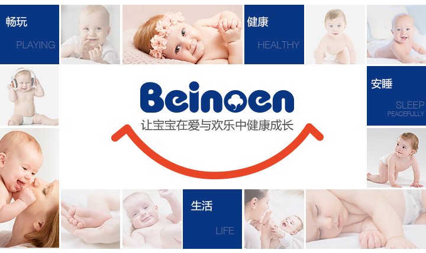

首页
HOME
关于百诺恩
ABOUT BEINOEN
关于产品
ABOUT PRODUCT
最新动态
ABOUT PRODUCT
妈妈爱问
ABOUT PRODUCT
联系我们
contact us

妈妈爱问
MOTHER ASKED
Commitment to growth up healthy
@王芳琳
孕期如何挑选护肤品？
@高博士
实现胎儿的健康和拥有完美肌肤并非不可兼得。孕妇怀孕期间， 新陈代谢的变化，可能会使自身的皮肤老化严重，孕期的皮肤问题会有很多，如果此时不能好好护理，皮肤很可能借机下滑。鉴于孕期的特殊性，孕妇在选择护肤产品时一定要慎重，孕期选择的护肤品应注意以下几点：
1、温和：孕期皮肤十分敏感，一定不要含有激素类的和对胎儿有害的化学成分，最好选择性质温和的孕期专用的安全低敏产品。
2、保湿：有些孕妇在怀孕期间的皮肤角质层增厚，使得面部特别干燥，因此选用专业安全的保湿产品护理是日常护肤的重点。
3、含有纯植物配方的护肤品对孕妇比较好。
4、简单：日常护肤步骤一定要简单，不要给皮肤造成负担，尽量选用一些专为怀孕而配制及喂哺母乳期间适用的产品来护理。
@王芳琳
孕产期护肤观念误区？
@高博士
1、用以前的普通护肤品：不安全，不专业，不全面，可能会被胎儿吸收！
2、啥也不用，后果很严重！
现代医学已经证明，孕产期给女性肌肤带来的损伤相当于10～13年的自然衰老过程，产后的皮肤自然衰老速度比孕前加快33%-48%！因此，孕产期妈妈的肌肤护理是延缓皮肤老化最重要的阶段。应选择专为怀孕而配制及喂哺母乳期间适用的产品。
@王芳琳
尿布疹如何产生及预防方法？
@高博士
产生原因：尿布疹是发生在裹尿布部位的一种皮肤炎性病变，也称为婴儿红臀。
预防治疗：首先，也是最主要的是挑选一款柔软、透气的优质纸尿裤，这样能有效预防和治疗尿布疹。一旦发现婴幼儿臀部有红肿，需勤换纸尿裤，保证婴儿臀部的清洁和干爽， 同时配合使用婴儿护臀软膏。
@王芳琳
如何挑选一款优质的纸尿裤？
@高博士
面对市场上琳琅满目的纸尿裤品牌，6个小妙招帮你轻松挑选到适合自家宝宝的纸尿裤！
1、吸收性好 吸收快：可以减少尿液与皮肤接触的时间，减少宝宝患尿布疹的概率。
2、干爽不回渗：宝宝不被湿湿的尿布弄得无法睡安稳，也减少了患尿布疹的机会。
3、滋润保护层：优质的纸尿裤会在表层的无纺布中添加天然的护肤成分，滋润宝宝娇嫩的皮肤。
4、防侧漏设计：选择具有防漏设计的纸尿裤，这样能防止宝宝的排泄物渗出。
5、质感柔软：宝宝的皮肤娇嫩，如果纸尿裤不够柔软容易引起小屁屁变红、甚至被磨破。
6、轻薄透气：宝宝排泄不规律，在挑选纸尿裤时要选择透气性好的轻薄型纸尿裤。
来自英国的母婴品牌百诺恩可以一并满足以上所有要求，百诺恩一直用优质创新带来更好的产品，让全球宝宝在无尽关爱中，安睡，畅玩。阳光棉亲肌瞬干纸尿裤、拉拉裤系列材料采用苏格兰大草原的阳光棉，质感柔软、亲肤不刺激。四大核心技术将速干、纤薄、吸水、锁水融为一身，为宝宝打造量身定制纸尿裤。
@王芳琳
纸尿裤的吸水性能否给婴儿高质量睡眠？
@高博士
医学研究发现，婴幼儿70%生长激素是在夜间睡眠时分泌的，优质的睡眠对婴幼儿的健康成长至关重要。使用吸水能力强和回渗小的一次性纸尿裤婴儿的睡眠时间要比使用传统尿布的婴儿长，有助于婴儿睡得更香甜。百诺恩纸尿裤瞬间干燥、长效干爽，海量吸水，是宝宝高质量睡眠的必备佳品。


1、温和：孕期皮肤十分敏感，一定不要含有激素类的和对胎儿有害的化学成分，最好选择性质温和的孕期专用的安全低敏产品。
2、保湿：有些孕妇在怀孕期间的皮肤角质层增厚，使得面部特别干燥，因此选用专业安全的保湿产品护理是日常护肤的重点。
3、含有纯植物配方的护肤品对孕妇比较好。
4、简单：日常护肤步骤一定要简单，不要给皮肤造成负担，尽量选用一些专为怀孕而配制及喂哺母乳期间适用的产品来护理。
2、啥也不用，后果很严重！
现代医学已经证明，孕产期给女性肌肤带来的损伤相当于10～13年的自然衰老过程，产后的皮肤自然衰老速度比孕前加快33%-48%！因此，孕产期妈妈的肌肤护理是延缓皮肤老化最重要的阶段。应选择专为怀孕而配制及喂哺母乳期间适用的产品。
预防治疗：首先，也是最主要的是挑选一款柔软、透气的优质纸尿裤，这样能有效预防和治疗尿布疹。一旦发现婴幼儿臀部有红肿，需勤换纸尿裤，保证婴儿臀部的清洁和干爽， 同时配合使用婴儿护臀软膏。
1、吸收性好 吸收快：可以减少尿液与皮肤接触的时间，减少宝宝患尿布疹的概率。
2、干爽不回渗：宝宝不被湿湿的尿布弄得无法睡安稳，也减少了患尿布疹的机会。
3、滋润保护层：优质的纸尿裤会在表层的无纺布中添加天然的护肤成分，滋润宝宝娇嫩的皮肤。
4、防侧漏设计：选择具有防漏设计的纸尿裤，这样能防止宝宝的排泄物渗出。
5、质感柔软：宝宝的皮肤娇嫩，如果纸尿裤不够柔软容易引起小屁屁变红、甚至被磨破。
6、轻薄透气：宝宝排泄不规律，在挑选纸尿裤时要选择透气性好的轻薄型纸尿裤。
来自英国的母婴品牌百诺恩可以一并满足以上所有要求，百诺恩一直用优质创新带来更好的产品，让全球宝宝在无尽关爱中，安睡，畅玩。阳光棉亲肌瞬干纸尿裤、拉拉裤系列材料采用苏格兰大草原的阳光棉，质感柔软、亲肤不刺激。四大核心技术将速干、纤薄、吸水、锁水融为一身，为宝宝打造量身定制纸尿裤。